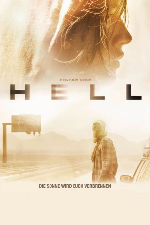

#5260 Hell
 
 IMDB-Wertung: 5.9 / 10
IMDB-Wertung: 5.9 / 10  Metascore: 0
Metascore: 0 
Seitdem die Strahlkraft der Sonne zugenommen hat, ist die Erde ein verdörrter, mörderischer Ort geworden. Nur wenige Überlebende sind verblieben, die sich notdürftig gegen die Sonnenstrahlen schützen und deren Leben von der Suche nach Wasser und Benzin bestimmt ist. Dazu gehört die Zweckgemeinschaft von Phillip und den Schwestern Marie und Leonie. Auf dem Weg in die Berge, wo es angeblich Leben geben soll, lesen sie Tom auf, ohne sich sicher sein zu können, dass er ihnen wohlgesonnen ist. Als sie in einen Hinterhalt geraten, beginnt der Kampf.
Jahr: 2011
Dauer: 89 Minuten
FSK: 16
Land: Deutschland Studio: Paramount PicturesTonspuren:
Untertitel: Deutsch,
Auflösung: 1080p (1920x816) Größe: 6922 MB
Genre: Thriller, Horror, Sci-Fi
Regisseur: Tim Fehlbaum
Drehbuch: Joe Shrapnel
Soundtrack:
Darsteller:
 Lars Eidinger als Phillip
Lars Eidinger als Phillip Hannah Herzsprung als Marie
Hannah Herzsprung als Marie Stipe Erceg als Tom
Stipe Erceg als Tom Angela Winkler als Bäuerin
Angela Winkler als Bäuerin- Lilo Baur als Französin
- Marco Calamandrei als Franzose
 Lisa Vicari als Leonie
Lisa Vicari als Leonie- Hans-Peter Recktenwald als Flüchtiger
- Yoann Blanc als Sohn Micha
- Christoph Gaugler als Brückner
- Nino Böhlau als Flori
- Ellen Schweiger als Oma
- Lutz Pretzsch als Anton
- Luca Winkler als Jens
- Tammo Winkler als Toni
- Anne Hartung als Sophia
- Mika Metz als Knecht
- Stanislav Bogdanov als Knecht
- Dieter Hilpmann als Gefangener
- Christine Sehr als Gefangene
- David Kichhoff als Gefangener
- Günter Moser als Gefangener
- Christine Kollmann als Gefangene
- Andreas Benda als Bauer
- Martin Grünberg als Bauer
 Michael Kranz als Micha
Michael Kranz als Micha
Datei: X:\2011(G-M)\Hell (2011, FSK16, 1920x816).mkv seit 05.01.2017
Festplatte: HD 2011(G-Z)
 Es gibt insgesamt 100 Filme in der Gruppe '2011(G-M)'
Es gibt insgesamt 100 Filme in der Gruppe '2011(G-M)'